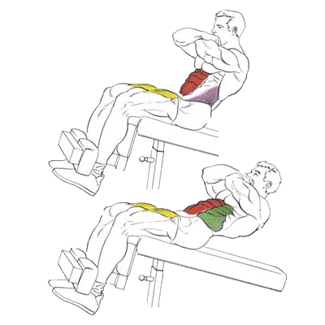

Упражнение на верхнюю часть пресса.
Исходное положение:
угол наклона скамьи – 30-40° (если наклонить скамью сильнее, то в нижней точке может произойти чрезмерный прилив крови к голове, а это опасно, особенно если у вас слабые кровеносные сосуды);
Техника выполнения:
Пподнимайтесь вверх на выдохе. Движение вверх – именно скручивание с округлением спины, а не подъем торса (в последнем случае основную работу выполняет не пресс, а поясничные мышцы).
На вдохе опуститесь вниз.
Рекомендации:
Поднимайтесь вверх исключительно за счет мышц пресса, не напрягайте шею и не опускайте подбородок к груди.